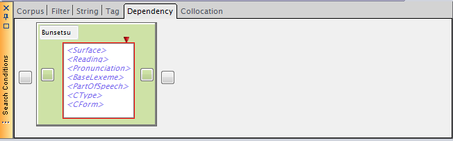
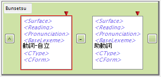
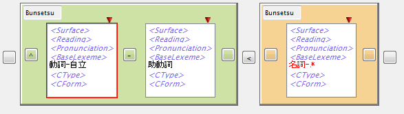
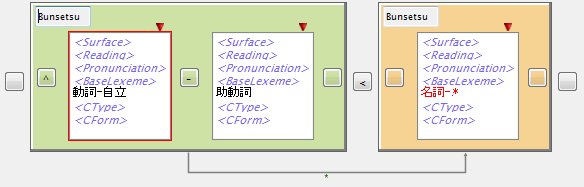
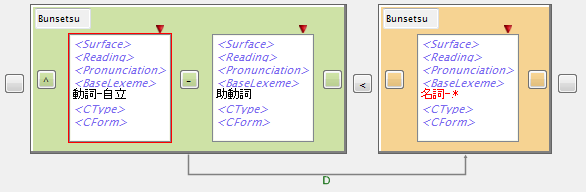

語単位の検索をさらに一歩進めて、文節と係り受けの構造を検索条件に含めたのが DependencySearchになります。
- 文節・係り受けタグを含まないコーパスでDependencySearchを行うことはできません。
- 文境界を超える条件は作成できません。
- 係り受け構造は、内部的にはより一般的なSegmentタグとLinkタグによるアノテーションの 一種として表現されており、DependencySearchをアノテーションをキーとする 検索の特殊な例と考えることもできます。しかしながら、DependencySearchの実装は 文節・係り受けに特化することにより高速化が図られており、一般的なアノテーション検索 （追加予定）とは一線を画すものとなっています。
DepdencnySearchを行うには、まずSearch Conditionsパネルにおいて、 "Dependency"タブを選択し、次の条件入力画面に移ります。

TagSearchの語条件Boxを基本要素としていますが、その外側に文節を表す色付きの 文節条件Boxがあります。
文節条件Boxに条件を入力する
語条件Boxの各カラムへの入力方法はTagSearchと同様ですので、ここでは繰り返しません。
TagSearchにあった相対位置を示すエディットボックスは存在していません。 Box間の位置に関する条件は、Box間にある特殊なボタンで指定します。 このボタンは、TagSearchの「+」ボタンと同じくBoxを追加する用途に加え、ボタン左右の Box間の位置条件を指定する機能を持ちます。ボタンを押すとポップアップメニューが表示 され、動作を選ぶことができ、動作の副作用としてボタンに記号が表示されます。このボタン上に 表示されている記号が相対位置条件となります。記号の意味を下表に示します。
| 記号 | メニューから選択したときの動作 | ボタンに表示されている時の意味 | 摘要 |
| (なし) | ボタンの記号をリセットする | 左右のBox間には位置関係制約がない | |
| + | Boxをボタンの位置に追加する | --- | |
| < | ボタンの表示を"<"にする | 左右のBoxの表す語は文節内でこの順に現れる | 左右端のボタンで選択した場合はBoxが追加される |
| - | ボタンの表示を"-"にする | 左右のBoxの表す語は文節内でこの順に連接して現れる | 左右端のボタンで選択した場合はBoxが追加される |
| ^ | ボタンの表示を"^"にする | 右のBoxの表す語は文節の先頭に現れる | 右端のボタンを押したときのみメニューに含まれる |
| $ | ボタンの表示を"$"にする | 左のBoxの表す語は文節の末尾に現れる | 左端のボタンを押したときのみメニューに含まれる |
文節条件の例を次に示します。この条件は、《「動詞-自立」を先頭に持ち、すぐ次の語が「助動詞」であるような文節》を表します。

この条件を作成する手順を次に示します。
- 第1の語条件Box（初期状態で表示されているもの）に「動詞-自立」を指定。
- 第1の語条件Boxの左のボタンを押し、メニューから「」を選択。
- 第1の語条件Boxの右のボタンを押し、メニューから「-」を選択。
- 第2の語条件Boxが現れるので、「助動詞」を指定。
文節条件Boxを追加する
ここまでは、単一の文節条件の作成方法でしたが、次に文節条件Boxを追加する方法を説明します。 文節条件Boxの左右にある（外側の）ボタンを使用します。文節条件内の（内側の）ボタンの場合と 似ていますが、対象が文節になること、位置は文に対する条件となることが異なります。
| 記号 | メニューから選択したときの動作 | ボタンに表示されている時の意味 | 摘要 |
| (なし) | ボタンの記号をリセットする | 左右のBox間には位置関係制約がない | |
| + | Boxをボタンの位置に追加する | --- | |
| < | ボタンの表示を"<"にする | 左右のBoxの表す文節は文内でこの順に現れる | 左右端のボタンで選択した場合はBoxが追加される |
| - | ボタンの表示を"-"にする | 左右のBoxの表す文節は文内でこの順に連接して現れる | 左右端のボタンで選択した場合はBoxが追加される |
| ^ | ボタンの表示を"^"にする | 右のBoxの表す文節は文の先頭に現れる | 右端のボタンを押したときのみメニューに含まれる |
| $ | ボタンの表示を"$"にする | 左のBoxの表す文節は文の末尾に現れる | 左端のボタンを押したときのみメニューに含まれる |
例として、先に作成した文節条件Boxの左にもう一つ文節条件Boxを追加したものを下に示します。

係り受け条件を追加する
文節条件を複数作成した場合、それらの文節間に係り受け条件を付けることができます。 係り受け条件は矢印（方向付きLink）であり、文節条件Boxの色の付いている部分をクリックし、 そのまま別の文節条件Boxまでマウスドラッグを行うことで作成できます。

矢印の中ほどにある文字は、係り受けの種類を表します。文字の上でマウスをクリックするとメニューから 選択できるようになっています。現在はCabochaの出力に合わせ、"D", "A", "O", "P", "I"が指定可能ですが 将来はタグセットに合わせて可変となるようにする予定です。"*"は任意の種類にマッチすることを示します。

- 矢印を消すには、矢印上でマウスをクリックしてメニューから"Delete"を選択します。
KWIC検索の実行
以上で条件が完成しましたので、検索を開始します。KWIC結果は次のようになります。
{kind=link}
Segment, Linkに対する検索
本節では文節と文節間係り受けに限定してDependencySearchの使い方を述べました。 文節は、より一般的な概念であるSegment（Start位置とEnd位置によって指定される任意の文字列区間）の一例であり、 また係り受けは同様にLink（2つのSegment間の関連）の一例にすぎません。
DependencySearch機能は、より一般的な「Segment, Linkのパターン検索」として使用することが可能です。 この使用法については、応用編のDependencySearchでSegment/Linkのパターンを検索するを参照ください。